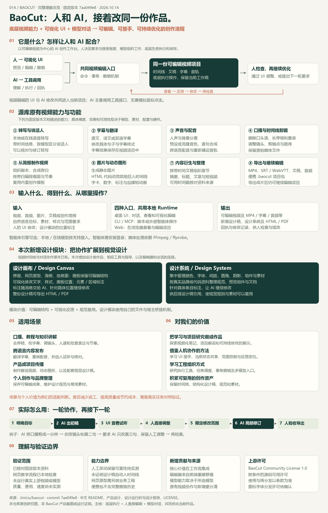

A / 人与界面
看见结果，直接调整
预览、试听、拖动片段、修改字幕、撤销。人的修改保留在当前项目中。
决定效果与接受程度底层负责执行，模型理解要求，界面让人看见并接手。每一次对话和手动调整，都继续作用于当前项目。
本仓库原创理解示意，非 BaoCut 界面截图。
BaoCut 把视频处理工具、智能体和可视化时间线连接起来：你可以先让 AI 完成一轮工作，再通过 UI 查看和直接修改，随后继续用对话优化指定部分。
预览、试听、拖动片段、修改字幕、撤销。人的修改保留在当前项目中。
决定效果与接受程度将“剪成一分钟”“改第三句字幕”等要求转成工具操作，并返回修改结果与回执。
组织工作与局部修改处理时间线、字幕、声音和渲染；视频编辑通过命令、事务与撤销机制保存。
负责实际执行图示概括视频编辑的协作结构。模型转写、配音等长任务还涉及任务调度；设计稿采用自己的文件与宿主桥接机制。
例子：把一段产品口播剪成一分钟。观察人的改动，如何在下一轮 AI 修改后保留下来。
固定教学示例 · 无模型或视频引擎调用等待第一轮剪辑
先提出整体目标，再查看初稿；每一轮继续修改当前项目。
这些能力由项目工具、媒体处理与模型后端共同提供。可编辑视频与会话 UI 已是 BaoCut 的原有基础。
| 工作 | 项目能力 | 人怎样继续优化 |
|---|---|---|
| 听懂素材 | 语音转写、时间信息，按模型支持区分说话人。 | 核对术语、修正转写，再继续处理。 |
| 处理字幕 | 原文、翻译或双语字幕，保存字幕样式。 | 改某一句译文或样式，检查实际显示。 |
| 跨语言配音 | 翻译、人声与背景分离、逐句语音合成及新音轨。 | 试听，要求调整指定句，再检查节奏。 |
| 剪辑口播 | 去口头语、停顿、重录片段；原始媒体保留。 | 在时间线上调整镜头与剪辑点。 |
| 从简报制作 | 组织脚本、合成旁白，按旁白编排画面与节奏，使用内置创作模板。 | 校对事实与脚本，调整镜头节奏和表达。 |
| 图片与动效 | 生成静态图片；用 HTML 编写字卡、数字、标注和品牌短动画，烘焙帧后放入时间线。 | 预览构图与效果，修改内容后重新检查。 |
| 内容衍生 | 根据带时间信息的文稿制作章节、摘要、标题、文章和短视频。 | 用时间戳回看素材，核对上下文和候选片段。 |
| 交付成果 | MP4、字幕、文稿、音频和可继续编辑的便携项目包。 | 确认内容后导出，项目仍可继续修改。 |
可以接入自己的智能体和本地或在线模型。桌面、CLI、MCP、Web 连接同一个本地 Runtime；不同能力与引擎的验证覆盖不同。
查看原有能力说明 ↗自然语言要求先转成工具操作。Node Runtime 承接客户端与工具请求，Rust 视频引擎校验并保存视频修改；人和 AI 继续围绕这个当前状态工作。
读取素材、文稿和当前项目，把目标与选中的句子、时间段或设计位置作为本轮上下文。人在 UI 中的修改应成为后续操作的起点。
模型理解目标、组织步骤，智能体调用编辑或计算工具。“只改第三句”要落实到明确对象和范围，不能把模型输出的文字当成已经完成的编辑。
转写、配音等计算由任务调度与模型/媒体 Worker 执行；产物和应用到视频的动作分开记录。视频引擎负责校验、版本检查、事务提交与持久化，产生回执与事件。
UI 显示当前工作稿；人预览、试听、直接改或撤销，再提出下一轮要求。真实使用中要确认改动范围、人工调整是否保留以及最终导出效果。
新增的是设计画布与设计系统，以及它们和会话、工作区、标注的连接。视频时间线与对话协作在这次提交之前已有。
制作界面、网页原型、海报或信息图；打开画板后，直接修改文字和样式，或在元素、区域上写标注，再随消息交给 AI。
集中管理颜色、文字样式、间距、组件和素材。设计稿可以引用它，AI 从规范出发制作，用户可以针对具体条目提出修改。
两条协作路径，分别理解：视频编辑共用视频命令与事务；设计稿通过文件、编辑器和宿主桥接连接会话。此提交未证明设计稿能自动进入视频时间线，视频字卡与动效仍由原有模块负责。
口播、教程、多语言发布、产品说明和设计规范已有能力基础。下面八种方向说明如何组合，以及还需补的环节；这些是研究建议，未作为新服务实现或验证。
把本仓库的研究说明、架构图和结论整理成可反复修改的短讲。
研究文稿 → 脚本与旁白 → 图示/镜头/动效 → 字幕与人工修订。
补脚本规划、图示与画面布局、事实和来源核对；设计稿进入视频时间线需要单独转换。
把录音、口播或自己的学习笔记转成教程，保留字幕和时间线以便复习与修改。
转写、章节整理、字幕、口播剪辑、知识讲解模板。
补课程目标、知识顺序、素材清单和人工审阅；模型生成的解释不能代替事实核对。
同一作品制作多个语言版本，逐句调整译文、声音和字幕。
翻译、双语字幕、人声分离、逐句语音合成与时间线铺轨。
补术语表、语言/音色配置、每版进度与版本登记，逐句试听并核对含义和节奏。
从长口播、访谈或课程中整理章节、文章、标题和候选短视频。
带时间文稿、章节与摘要、片段剪辑和衍生内容。
保留源片段与时间戳，检查上下文是否完整；补候选列表、去重规则与成片验收。
让海报、网页原型、封面以及配套视频采用一致的视觉规则。
设计系统的颜色/字体/组件/素材，设计画布和原有视频模板。
设计系统可供设计稿引用；视频字幕、字卡和动效的参数映射仍需适配，不能假定自动同步。
在素材目录和任务清单上重复执行固定流程，减少重复手工发起。
CLI/MCP 工具入口、转写/字幕/导出、任务状态和变更回执。
补批次清单、失败重试、资源与预算控制、版本记录及人工检查点；不同工具入口范围要逐项核对。
把带时间的课程或访谈文稿用于检索问答，回答能回到原视频核对。
BaoCut 的转写与时间信息 + 自建检索与问答系统。
另建文稿导入、清洗、切块、索引、检索和时间戳引用；本研究未实现真实 RAG 接口。
借鉴“工具执行 + 可视化接手 + 位置反馈”的方式，扩展到其他创作工作台。
编辑入口、当前状态、版本/回执、撤销、预览和人工验收。
为目标产物设计自己的命令或文件协议、范围控制与同步机制；先验证小任务，再扩展自动化。
扩展先从一个固定素材和一个明确目标开始：保存任务、素材、版本与回执，加入人工检查点，再考虑批量制作或连接其他系统。
模型先组织批量处理；看过结果后，再指向一句字幕、一个镜头或一个设计元素提出要求。更容易把反馈落实到具体对象。
用户能接手编辑，AI 继续当前工作稿。值得借鉴的是状态共享、修改范围和撤销机制，减少反复搬运成果的过程。
视频保留时间线，设计稿保留结构，设计系统保留视觉规范。后续优化有明确对象，后续设计有可复用依据。
用相同素材、相同目标对照人工流程与 AI 协作，比较最终质量、总耗时、调用费用与返工成本；同时检查局部修改范围、人工改动是否保留、撤销是否恢复和导出是否完整。
对我们的实际意义，是探索把学习笔记和项目研究做成可修改的解说作品，并学习可视化接手、工具执行、状态共享和人工验收的工程组织方式。
新增价值主要来自编辑器与工作流集成：把生成、查看、直接编辑、标注和对话修改连起来。实际减少多少返工、效果是否更好，仍需要真实任务对照验证。
上游原创材料采用 BaoCut Community License 1.0，是附条件的源码可用许可。作者说明设计编辑器来自 Claude Design 相关前端的 TypeScript 重建与移植；字体图标的分发许可仍待确认。本网页使用原创图示与归纳文字，未移植上游编辑器代码或素材。
从库的定位、原有功能、人机协作到新增模块、使用场景、对我们的价值和验证边界，放在同一张图里。高清 PNG 可保存，SVG 可放大；图中场景与价值是研究判断。
